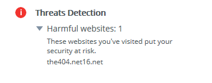

This is an archive of 404's history, featuring screenshots and the like.
The404 was originally created on February 11, 2017 by my good friend
Zeeshan, who used it for pretty much the same thing I do, until I bought the site off him for the small price of 1¢ on January 18, 2018.
January 26, 2018
The earliest screenshot I have of the404. This was 404's initial design (v0), and was faithfully recreated in 2020 to be used on
404's Birthday. This version of the site has not been preserved, and was recreated entirely from this single screenshot.
January 27, 2018
Taken in the middle of designing the v1 site. Note the message in the footer.

February 20, 2018
The school board blocked my site. Still makes me smile to this day.
May 15, 2018
The v1 site, in all it's glory. This design was used from January to August 2018, and is preserved here.
September 16, 2018
The v2 site was created on August 27 as a full rewrite of the404.
March 10, 2019
The v2 site at the end of it's lifespan. This design was used from August 2018 to March 2019, and is preserved here. The v2 design didn't change much over the course of it's use.
March 10, 2019
Later that same day, I created the v3 site (seen on the left). This was another full rewrite of the404.
April 4, 2019
v3.1, featuring this absolutely hideous headache-inducing colourscheme.
June 6, 2019
v3.2, with no purple anywhere to be found. Ugly in hindsight.
August 4, 2019
v3.3, which introduced some font variation (thank god), and a more traditional colourscheme. This screenshot was taken to show off Firefox's wonky rendering of the top-left tabs.
January 11, 2020
For v3.5, I took a big step into the unknown with a new colourscheme. It was nice, but needed a few tweaks.
April 25, 2020
In February, I tweaked the colours again for v3.6, giving it a bit of a 'sunset' feel. 404 didn't see much activity for the next few months as school consumed every ounce of spare time.
May 4, 2020
Nothing of interest happened on this date. Move along.
May 7, 2020
Something about the sunset colours just weren't doing it for me, so I completely overhauled them once again, featuring the iconic 404 purple, as well as a retro teal colour that was used heavily as an accent back in the v1 days. v3.7.2 is archived
here.
June 12, 2020
Early June 2020 saw many unexpected changes to the404. On the 6th, the hosting provider 404 had used since it's creation suspended the site without warning or reason.
If it weren't for my own due diligence in taking regular backups content,I would have lost a significant portion of the site. Thankfully, nothing was lost, and I moved the site over to Github Pages over the next day.
This move required a full rewrite of the site's internals, which made heavy use of PHP. GHP doesn't support PHP, so a migration to JS and Firebase was necessary. This is the current iteration of the site, v4.
June 17, 2020
v4.0.4, the version number I had been waiting to reach for years (ok, maybe only a week or so since v4.0.0). This is the 404 joke to end all 404 jokes.
There was nothing particularly special about this update other than some bug fixes and some design polishing, but it was still legendary nonetheless.